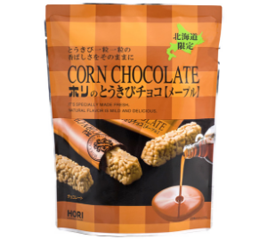
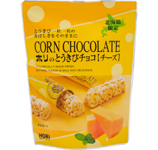
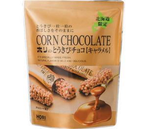
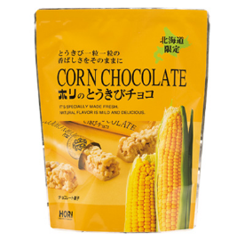
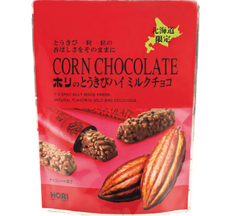
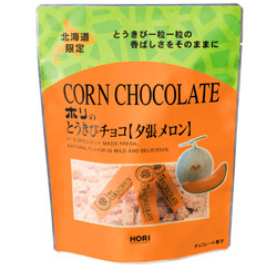
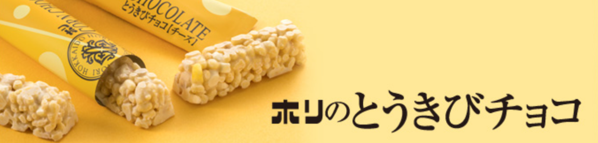

-

すっきりとした甘みのメープルシュガーを加えたオリジナルチョコレートで仕上げた絶妙な味わい。
-

コク豊かな北海道産チェダーチーズを使用したチョコレートで仕上げた絶妙な味わい。
-

カラメルのほろ苦い香りとミルクの風味豊かなブレンドのチョコレートで仕上げた絶妙な味わい。
-

ほのかに広がるやさしい甘さ。とうきびを厳選した上質なホワイトチョコレートでコーティング。
-

サクッサクッとした食感と、とうきび本来の香ばしさ、甘さ控えめが特徴。
-

豊かな大地で黄金色に実ったとうきびを、良質な夕張メロンチョコレートでコーティング。

香ばしいとうきびをチョコで優しく包みました
自然豊かな大地で黄金色に実ったとうきびと、厳選された上質なチョコレートが融け合い、
おいしいとうきびチョコになりました。素材本来のおいしさを活かした優しい甘さが
サクサクとお口に広がります。北海道を代表するロングセラー商品です。